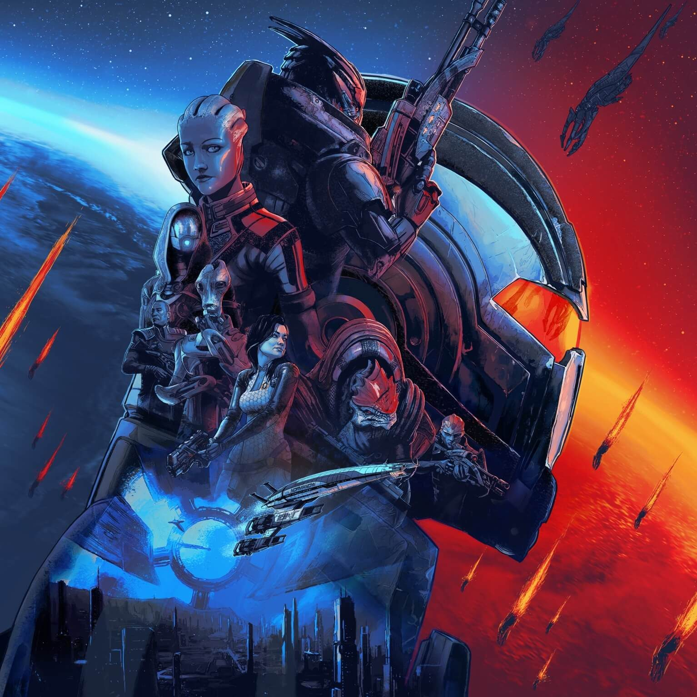
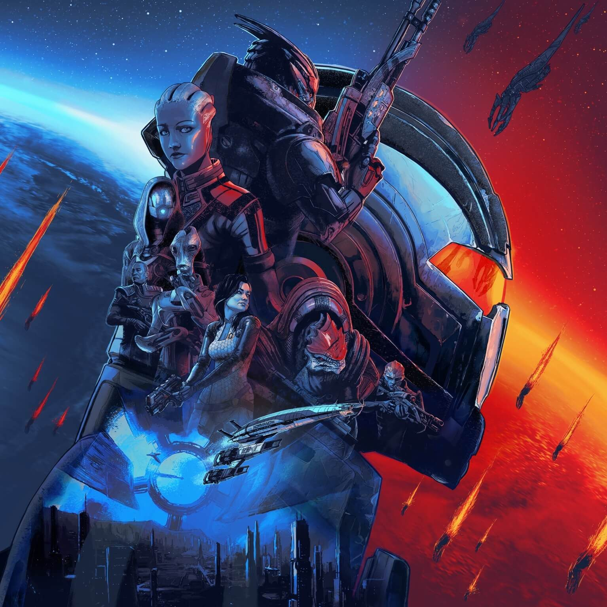

Hobbies
 


My hobbies are pretty tamed and pretty normal for a comp sci major, other than coding for obviuous reasons, I'll take coding out as one of my hobbies. Most of my hobbies are in video games, espically with rpgs(role playing games), other than Halo, which is a first person shooter due to having a special place in my heart as the first video game I played on console and as well with its rich lore it has manufactured over the years. So what else other than video games do I put my time in? Well for almost 2 years I have been investing in stocks and gathered enough info to help others go into investing, and my portforlio has seen many ups and downs, but thats that whole point of stock investing, its all about luck and risk, and I do love taking risks and love how money flows.
So far I am trying to get into more hobbies or side projects so I can expand my knowledge expand and see what I like and don't like. For example, I use to write my own little stories, but given with many factors and how heavy editing your work is, as well as changing stories entirely sometimes, I sorta left it. So far im trying to get into more cryto-currency due to how impactful it has influence many people into investing.
Other than that I guess these are the hobbies at the moment where I am most happy and stuck for so long with, in the future I hope to get more hobbies that satisfy my person and realize what is right for me.